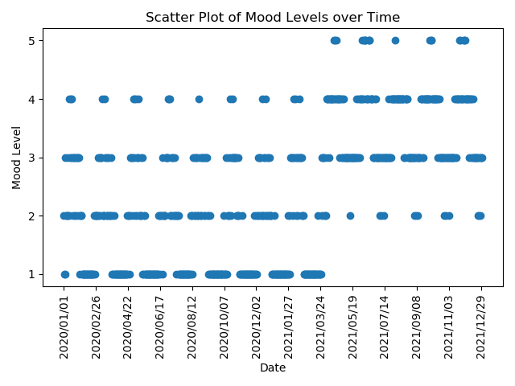
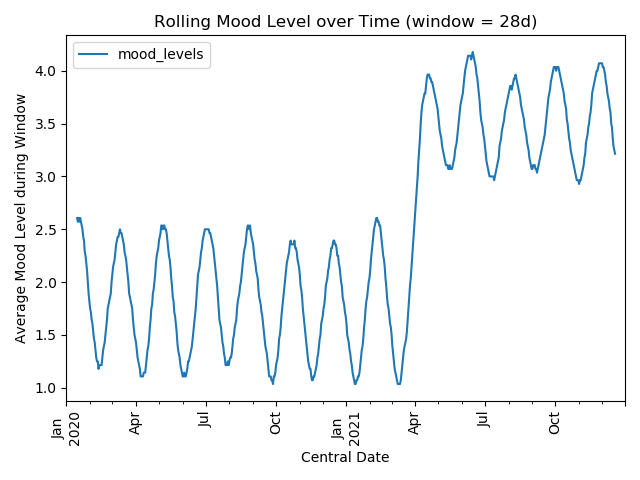

We touch on:
- File input/output
- Regular expressions
- Tuples, Lists and Dictionaries
- Datetimes
- Plotting with
matplotlib - Very basic usage of
pandasfor data analysis
Problem
Kennedy, a 26 year old male, has been struggling with depression. On your advice, he has started tracking and reflecting on his mood every day for the past two years from 1st January 2020 to 31st December 2021 inclusive.
To track his mood, he used a (fictional) mobile app - Mood Diary. Every day, Mood Diary would send him a push notification asking him to select one of five moods. Each mood corresponds to one of five mood levels, and is drawn randomly from a descriptor pool for that level. Here are the descriptors Mood Diary uses:
| Mood Level | Descriptors |
|---|---|
| 1 | Depressed, very low, hopeless, bleak |
| 2 | Low, sad, teary, flat, tired, stressed |
| 3 | So-so, okay, fine, not bad, satisfied |
| 4 | Good, refreshed, happy, joyful |
| 5 | On top of the world, ecstatic, elated, elevated, amazing, brilliant, fantastic |
For example, on a given day, Mood Diary might present the five words "Depressed", "Tired", "Fine", "Refreshed" and "Amazing". Kennedy then selects one of those five moods for that day.
Kennedy has exported his mood results and would like you to help him interpret them. The exported data consists of one line per day - a date, four spaces, then a sentence which Mood Diary uses to represent each day ("I feel {MOOD} today."). The mood is as described in the table above, but in capital letters.
2020/01/01 I feel SAD today.
Your task is to:
- Process Kennedy's exported Mood Diary text and classify each day into a mood level.
- Plot Kennedy's mood level over the 2 years.
- Identify approximately when (to the nearest month) Kennedy's mood level pattern changed.
Solution
Click to show the answer.
Kennedy's mood level changed, to the nearest month, in April 2021.
Click to show the solution.
First, we need to read the file data into a variable so we can refer to it in
Python. We'll read the file into a string with the read() method. Reading and
writing files is something you'll have to do very often, so it's good to get
familiar with this.
FILEPATH = "./input-mood-diary.txt" # Set variable FILEPATH to the file location with open(FILEPATH) as infile: # Open the file and put its handle into variable infile RAW = infile.read() # Call read() on the handle to read the contents
The variable RAW now contains a big string of the entire file contents. Let's
read the first 40 characters.
print(RAW[:40])
2020/01/01 I feel SAD today. 2020/01/
Let's try and extract just the date, and the word between "feel" and "today"
from each line in RAW. A very useful tool to do this with is regular
expressions. Regular expressions (regexs) are a very compact way to define how
to extract certain elements from a piece of text with a well-defined structure.
For each line in the file, we notice that it's formatted like so:
YYYY/MM/DD I feel MOOD today.
We can write a regular expression that will match this as the following:
(.*)\s{4}I feel (.*) today.
This might look a bit confusing if you're not familiar with regular expressions.
The first part, .*, will match any character (.) zero or more times (*).
This will match the date as a whole (we'll split it up later). The second part,
\s{4}, will match any whitespace character (\s) (e.g. spaces!) exactly 4
times. The third part, I feel (.*) today. will match the phrase "I feel MOOD
today.", where MOOD can any character (.) occuring zero or more times (*).
We choose to match any character rather than say just letters, because we know
that some of the moods have spaces or a hyphen in them. Finally, anything
enclosed in brackets will actually be extracted from the string.
In Python, we can compile and use regular expressions with the re library,
which is part of Python's standard set of modules. We will use the findall()
method to find every line which matches the regular expression we've defined and
extracts the date and mood from each line.
import re # Import re library MATCH_RE = r'(.*)\s{4}I feel (.*) today.' # Define the regex MATCHER = re.compile(MATCH_RE) # "Compile" the regex SPLIT = MATCHER.findall(RAW) # Apply matcher to all lines
Let's look at the first item of the list SPLIT, which contains all our
extracted data.
print(SPLIT[0])
('2020/01/01', 'SAD')
This is a tuple which contains two elements, both of which are strings. The list
SPLIT contains a list of these tuples.
Now that we've split the file contents into a list of the strings we're interested, let's now try to convert each of them to something numerical we can plot.
Let's first try and create a list containing a datetime object for each of the
first items in the list SPLIT, which is a more "date and time"-aware version
of the string-form of the date.
Python's standard library comes with a datetime library which handles a large
variety of datetime operations. As we want to parse a datetime string into a
datetime object, we'll use the strptime() (think "string parse time") method.
To parse the string into a datetime, we need to define the datetime
specification. The documentation provides a good explanation of how to define
this specification. The format of datestrings in this data is particularly
common, and we'll specify it as %Y/%m/%d - i.e. a 4-digit year (%Y), a
forward slash, a 2-digit month (%m), a forward slash, then a 2-digit day
(%d). Many more flexible specifications are possible though!
from datetime import datetime DATETIMES = [datetime.strptime(string[0], '%Y/%m/%d') for string in SPLIT]
Datetime is a bit of an unusual module in that the module is called datetime,
which contains a class also called datetime. Don't worry too much about it for
now.
The last line is called a list comprehension. List comprehensions are
extremely useful in Python and let you define operations on the entirety of a
list in a very concise manner. In this example, we take the first element of
each list item (in Python and many other programming languages, the first item
corresponds to the index at 0, the second at 1 etc.) (string[0]), and we parse
it with the specification we've described using strptime, and we do so for
every item in the SPLIT list (for string in SPLIT). We then store all those
datetimes in the DATETIMES variable.
Here's the first item of DATETIMES.
print(DATETIMES[0].)
datetime.datetime(2020, 1, 1, 0, 0)
We can see it's been parsed into a datetime object with actual numbers.
We now want to translate each of the mood level words into a level. We can do this with a dictionary in Python, which you can think of as just like a dictionary in real-life - something that tells us how to map one item to another. In other languages, these are sometimes called hash maps or hash tables. In this case, we want to map each mood word into a mood level.
We'll define it explicitly below. This isn't the most elegant way, but it is certainly the most obvious way and a quick way to get introduced to dictionaries! We'll basically translate the table verbatim.
MOOD_DICT = { "DEPRESSED": 1, "VERY LOW": 1, "HOPELESS": 1, "BLEAK": 1, "LOW": 2, "SAD": 2, "TEARY": 2, "FLAT": 2, "TIRED": 2, "STRESSED": 2, "SO-SO": 3, "OKAY": 3, "FINE": 3, "NOT BAD": 3, "SATISFIED": 3, "GOOD": 4, "REFRESHED": 4, "HAPPY": 4, "JOYFUL": 4, "ON TOP OF THE WORLD": 5, "ECSTATIC": 5, "ELATED": 5, "ELEVATED": 5, "AMAZING": 5, "BRILLIANT": 5, "FANTASTIC": 5, }
As an alternative, you could parse the table into this dictionary rather than writing it out by hand, which would save you typing it out and avoid transcription errors. This would be the preferable option but, for now, don't worry too much about it.
We can now write a list comprehension to translate each of the mood descriptors into their corresponding number.
MOOD_LEVELS = [MOOD_DICT[string[1]] for string in SPLIT]
Let's now see the first 5 items of MOOD_LEVELS.
print(MOOD_LEVELS[:5])
[2, 1, 3, 1, 2]
We now have all the datetimes and the mood levels in numerical (or number-aware) formats. We can now plot the data.
One of the most often-used libraries for plotting in Python is matplotlib.
Matplotlib is very powerful and used for all sorts of different types of plots.
Python doesn't come with matplotlib by default - if you're using vanilla
Python, you'll have to install it with pip. If you're using the Anaconda
distribution, you should already have it available.
To plot with matplotlib, the easiest interface is through pyplot, which makes
plotting as easy as calling a single function. It is convention to import
pyplot as a shorter name, plt. Let's first try a very naive scatter plot -
because this is discrete data with only 5 levels, it won't look very nice, so
we'll plot another representation after.
# Don't worry about these two lines - these are for us making the tutorial! import matplotlib matplotlib.use('Agg') from matplotlib import pyplot as plt
fig = plt.figure() xs = [d.toordinal() for d in DATETIMES] # Convert datetimes to numbers xticks = [datetime.strftime(d, '%Y/%m/%d') for d in DATETIMES] # Convert datetimes to strings plt.scatter( # Call the scatterplot function x=xs, # With the ordinal dates as x values y=MOOD_LEVELS, # And the mood levels as y values ) plt.xticks(xs[::56], xticks[::56], rotation=90) # Set the x ticks to every 56th date plt.yticks(range(1,6), range(1,6)) # Set the y ticks to 1-5 (range excludes last val) plt.title('Scatter Plot of Mood Levels over Time') # Set the title plt.ylabel('Mood Level') # Set the y axis label plt.xlabel('Date') # Set the x axis label plt.tight_layout() # Squeeze the layout
Text(0.5, -42.22777777777778, 'Date')
# Save the figure - don't worry about this part, this is for our use! PLOT_FILENAME = "mood-diary-plot.png" plt.savefig(PLOT_FILENAME) PLOT_FILENAME

Although the plot itself isn't a very good choice of representing the data, we
can see a clear shift roughly aroud April 2021 in Kennedy's mood. There's a lot
going on in the plot code if you haven't used matplotlib before - but it makes
scripting plots very easy, and very easily modifiable. The plotting interface is
very well documented, so that would be our recommendation if you have trouble as
a first port of call (or, Google! Many people have used matplotlib before and
will have likely encountered the same problems as you have).
Can we represent this data in a nicer graphical format? There are some interesting ways we can plot categorical, ordinal data over a time series. We'll choose a very simple way - a rolling average with a width of 28 days. We can already see a trend, but given that the data only has 5 levels, the trend would probably be easier to visualise with smoothing. We can also see there appears to be cyclical changes in mood given that it appears to go up and down a lot, though the period of this cycle appears to be quite short.
Pandas is a data analysis library for Python and one that tends to get a lot of praise in the data science community as one of Python's premier strengths. Pandas makes a lot of basic data analysis operations very simple by abstracting them out into callable functions. Pandas can also encapsulate data into a spreadsheet-like data structure, known as Data Frames. Data Frames are a bit like a transparent, (more-easily) programmable Excel document.
Again, if you are using vanilla Python, you'll need to install Pandas through
pip. If you are using Anaconda, it should already be included.
Let's import Pandas and load the data into a dataframe. By convention, pandas is
often imported in to Python under a shorter name, pd.
import pandas as pd DATAFRAME = pd.DataFrame( # Create a dataframe zip(DATETIMES, MOOD_LEVELS), # With the data columns=['datetimes', 'mood_levels'], # With these column names ) DATAFRAME.set_index('datetimes', inplace=True) # Set the index to datetime column
Pandas will convert a list of lists into a 2D spreadsheet-like DataFrame - we
use zip here to "zip" the two lists DATETIMES and MOOD_LEVELS into a list
of lists. Here's the first 3 rows of DATAFRAME:
DATAFRAME[:3]
mood_levels
datetimes
2020-01-01 2
2020-01-02 1
2020-01-03 3
Pandas already implements a rolling function to do rolling window calculations, which we can apply to calculate a rolling average.
ROLLED = DATAFRAME.rolling( # Perform a rolling window calculation window=28, # With a window size of 28 (days) center=True, # Centered at each day ).mean() # And take the mean of each window
Let's look at the results at the 14th to 17th index. The first 14 values will be
NaN because the a window of width 28 can only start fitting into the data at
the 14th index.
ROLLED[14:17]
mood_levels
datetimes
2020-01-15 2.607143
2020-01-16 2.571429
2020-01-17 2.607143
Each of these values now represents the average mood level of in the 14 days prior to and 14 days after the listed date.
Pandas exposes a very convenient plot method on Data Frames which means you can plot the Data Frame directly. Let's use it.
fig = plt.figure() # Create a new figure ax = ROLLED.plot( # Plot the dataframe kind='line', # As a line plot title='Rolling Mood Level over Time (window = 28d)', rot=90, # Rotate the xlabels ) ax.set_xlabel('Central Date') ax.set_ylabel('Average Mood Level during Window') plt.tight_layout()
Text(42.597222222222214, 0.5, 'Average Mood Level during Window')
# Save the figure - don't worry about this part, this is for our use! PLOT_FILENAME = "mood-diary-plot-rolling.png" plt.savefig(PLOT_FILENAME) PLOT_FILENAME

With this, the cyclical nature of the graph is clear and he jump in mood level is also made very apparent. We could choose different windows - for example, to smooth out each cycle - but already, it should be very clear that Kennedy's mood level pattern changed in approximately April 2021.
This has been quite a long discussion of how to get here - but once you get used to it, this sort of task becomes very quick. We haven't used very complicated means of processing the data, and were able to plot it almost directly once we'd processed the text.
Data Generation
Click here to show the data generation code.
This data was generated with the J programming language. J is a descendent of the APL programming language family, infamous for being terse and apparently unreadable. APL and J make very heavy use of symbols to expose useful primitive operations on arrays - similar in many ways to Matlab or Python's Numpy. Though the symbolism may look like obfuscation, it's not intentional. One of the core ideas of the APL family is about operating on collections of data as a whole rather than using conditional or looping structures, and the notation is simply a way to express these operations compactly.
If you are interested in the APL/J/K family of languages, then we are always very happy to have a chat to explain more about them. K (similar to J) is apparently used quite heavily in the financial industry - so even though the languages may appear unreadable, they are used in real-life.
First, we define the qualitative words and their groupings into mood levels.
Level1 =: 'DEPRESSED';'VERY LOW';'HOPELESS';'BLEAK' Level2 =: 'LOW';'SAD';'TEARY';'FLAT';'TIRED';'STRESSED' Level3 =: 'SO-SO';'OKAY';'FINE';'NOT BAD';'SATISFIED' Level4 =: 'GOOD';'REFRESHED';'HAPPY';'JOYFUL' Level5 =: 'ON TOP OF THE WORLD';'ECSTATIC';'ELATED';'ELEVATED';'AMAZING';'BRILLIANT';'FANTASTIC' Levels =: Level1;Level2;Level3;Level4;<Level5
Next, we define important dates for the data.
StartDate =: 2020 1 1 EndDate =: 2022 1 1 ChangeDate =: 2021 4 3
We will model the mood with a low-amplitude sine wave with random perturbations, then
round it to one of the five levels. We'll give the sine function a period of 4
weeks and an amplitude of 1.5, and translate it so that it averages around
Level2 (or index 1 of the Levels array). We'll also add some random noise as a
uniform distribution between -1 and 1, and make sure to keep it between 0 and 4.
mood1 =: dyad :'<.0>.(1-~2*x)+1+1.5*1&o.28%~o.y'
After ChangeDate, we'll translate the the mood so it averages around Level 4
(index 3), with an amplitude of 0.8 and lower random noise.
mood2 =: dyad :'<.5<.0>.(0.5-~x)+3+0.8*1&o.28%~o.y'
We'll now create the numerical data.
NumData1 =: (?@:#&0 mood1 i.) ChangeDate(todayno@[-todayno@])StartDate NumData2 =: (?@:#&0 mood2 i.) EndDate(todayno@[-todayno@])ChangeDate NumData =: NumData1,NumData2
Next, we define a function to index into levels using NumData and choose a
random word at the corresponding level.
pick =: [:(?@#{])>@:{&Levels
We can then convert the numerical data into boxed descriptors.
WordData =: ; pick each NumData
And convert the dates to corresponding strings.
Days =: (todayno StartDate)&+ i. EndDate(todayno@[-todayno@])StartDate pad =: 4 2 2&((([@('0'#~[-#@]),]) ":@]) each) Dates =: (pad@todate) each Days
Finally, we define a function to format the data.
fmtword =: ('I feel ',LF,~' today.',~]) fmtdate =: 1}.&:;'/',each] fmt =: dyad :'(fmtdate x),'' '',(fmtword y)'
We then format the data and save it.
DataString =: ; Dates fmt each WordData DataString fwrite < 'input-mood-diary.txt'